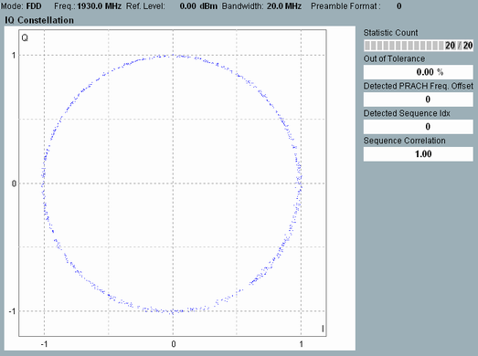

View I/Q Constellation
This single-preamble view shows the modulation symbols as points in the I/Q plane.

I/Q constellation diagram
The typical constellation diagram of a random access preamble shows 839 points (preamble format 4: 139 points) evenly distributed on a circle around the origin. The I/Q amplitudes correspond to the values that the R&S CMW uses for the EVM calculation: A possible I/Q origin offset is already subtracted out.
See also: "I/Q Constellation Diagram"
For additional information, refer to "Common View Elements".